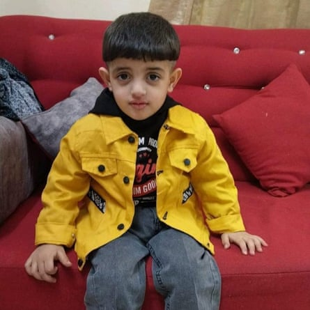
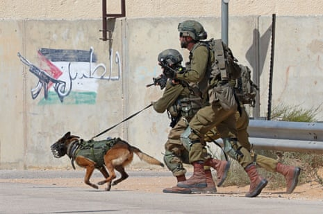
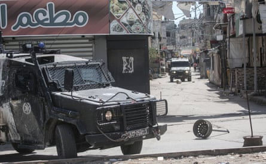
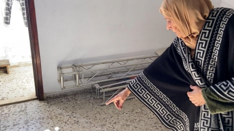
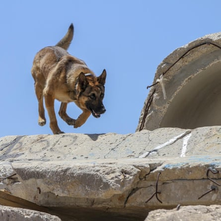
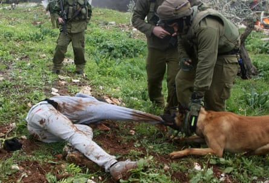

I t was only seconds after soldiers entered the Hashash family’s home in the Balata refugee camp in the West Bank that the dog attack began. As military raids rolled out across her neighbourhood one morning in February 2023, Amani Hashash says she took her four children into a bedroom. When she heard Israeli military coming into their home she called out that they were inside and posed no threat.
Moments later the bedroom door was opened and a large, unmuzzled dog launched itself into the room, plunging its teeth into her three-year-old son, Ibrahim, who was asleep in her lap.
Ibrahim Hashash, who was three at the time of the attack.Photograph: Handout
Hashash fought to get the animal away as it mauled and shook her screaming son and started to drag him out of the room. “But it was such a big dog, not like any other dog I have seen,” she says. “It kept biting and pulling my son away from me. I screamed and hit it, but it kept pulling at him.”
She says she begged the soldiers to call off the attack but they couldn’t control the animal. By the time they managed to drag the dog away, Ibrahim was unconscious and bleeding heavily. The soldiers injected Ibrahim with sedatives and called an ambulance, which took him to hospital where he was rushed into surgery.
“When I saw his wounds I was distraught because they were so extensive,” says Hashash. “The doctors said his condition was critical. One wound was six and a half centimetres, another was four centimetres. There were so many wounds the dog had caused, it hadn’t left any of Ibrahim’s back untouched.”
Ibrahim needed 42 stitches for internal and external injuries and 21 injections to treat an infection contracted from the bites. Photographs of the injuries sustained in the attack seen by the Guardian and ARIJ show extensive wounding and bite marks.
More than a year later, Hashash says Ibrahim still has nightmares and his wounds have not healed. “They did this to terrorise us,” she says. Hashash says one of the Israeli commanders had told her that the dog had been trained to attack the first person it saw. “He’s just a child,” she says. “He hasn’t done anything wrong.”
The IDF refused to comment on the case.
Amani Hashash shows dog-inflicted injuries on her three-year-old son Ibrahim – video
The dog that attacked Ibrahim is likely to have been a Belgian malinois, which Hashash identified from pictures of different dogs used by the military. Originally used to herd sheep, the breed is now widely used by Oketz, Israel’s specialist canine unit, feted in Israel and widely feared across the Palestinian territories .
According to an investigation by Arab Reporters for Investigative Journalism (ARIJ) and the Guardian, it is also likely that the animal used was sent to Israel from Europe , where a steady flow of dogs are traded from specialist trainers into the ranks of the Israeli military.
Israeli soldiers from the Oketz canine unit at a training base in southern Israel.Photograph: Jack Guez/AFP/Getty Images
Israeli military vehicles patrol the streets of Balata refugee camp.Photograph: Nasser Ishtayeh/SOPA Images/REX/Shutterstock
Last year, commanders in the Oketz unit told US urban warfare researcher John Spencer , who has embedded with the IDF on multiple operations, that 99% of the approximately 70 military dogs it buys every year were sourced from companies in Europe, a figure that the IDF did not dispute when asked to confirm.
Oketz insists it only deploys attack dogs in anti-terrorism operations, but human rights organisations inside Gaza and the West Bank say the use of the animals to attack, terrorise and humiliate Palestinian civilians has increased since the beginning of the war in Gaza, leading to multiple injuries and some fatalities.
Muhammed Bhar’s mother, Nabila, describes the dog attack that killed her son – video
One organisation, Euro Med Human Rights Monitor, says it has documented 146 cases of attack dogs being used against civilians by the Israeli army since October 2023.
In one incident, in July 2024, an IDF dog attacked Muhammed Bhar , a young man with Down’s syndrome and autism, at his home in Shejaiya in Gaza City. In the aftermath of the attack, IDF soldiers forced his family out of their home, leaving Bhar to die alone of his wounds.
Muhammed Bhar, left, and bloodstains on the chair in which he was attacked.Photograph: family handout
A video published in June 2024 appeared to show an Israeli military dog attacking Dawlat Al Tanani, a 68-year-old woman, in her home in the Jabalia refugee camp in Gaza, leaving her with injuries.
Animal welfare experts have criticised the weaponising of dogs by training them to attack civilians, calling the process “a moral violation”. Dogs reportedly undergo extensive training with Oketz after they arrive in Israel before being deployed in operations.
Charities have also raised concern about the high numbers of dogs dying in military operations. In January , Israeli military reports said the Oketz unit had lost 42 military dogs, since the beginning of the war on Gaza, although online references to the number of Oketz dogs who have died have recently been removed.
Al Jazeera footage shows dog attack that left Dawlat Al Tanani seriously injured – video
“It is unethical to turn dogs, which are naturally social creatures, into instruments of aggression to be used in wars that are solely caused by humans,” says animal behaviour expert Dr Jonathan Balcombe. “Dogs don’t choose to fight, they are made victims in conflicts they don’t understand.”
Tahrir Husni was pregnant when she says Israeli soldiers stormed her house in Khan Younis in 2023 and set a dog on her, which then mauled her in an attack that lasted more than 10 minutes.
“It was so big, it was impossible to push or kick it away,” she says. “When it was attacking me, I lost all feeling in my leg. When it was over, I sat down on the couch and then I could see my blood and flesh all over the floor.”
Husni says hours later she miscarried. “I lost the child I’d waited six years for,” she says. “My leg is so disfigured I can’t bear to look at it. I can’t walk, and the pain is always there.”
The IDF say their dogs and personnel are highly trained and that the animals are not used for punitive purposes or to harm civilians.Photograph: Alamy
In the West Bank, the Palestinian human rights organisation Al-Haq has also documented 18 cases of military dog attacks on civilians since October 2023, including children.
The UN says that the use of military dogs against Palestinian prisoners in Israeli detention throughout the war constitutes a violation of international human rights law . According to testimonies from former detainees reported by Physicians for Human Rights , dogs have been ordered to bite and maul prisoners and urinated and defecated on them.
Amnesty International says that the use of dogs against civilians needs to be urgently recognised in legal instruments and laws regulating the use and sale of conventional weapons.
“They should be part of international treaties regulating the use [of weapons], to stop them being used in violation of human rights,” says Patrick Wilcken, an expert on military and security issues at Amnesty.
“There is a clear risk that these exports help to promote practices that violate international and human rights law, so companies and states should seriously consider whether their activities are linked to unlawful acts committed by Israel.”
Richard Falk, a former UN special rapporteur on the Palestinian territories, says European companies should stop exporting military dogs to Israel, adding that continuing to do so makes them complicit in human rights abuses.
Israeli soldiers watch a military dog at a property in the Gaza Strip in February 2024.Photograph: Israel Defense Forces/Reuters
“From the perspective of general international law, I have no doubt whatsoever that companies exporting these dogs are complicit, because they know exactly how they are used,” says Falk.
The investigation found that a large number of military and police dogs have been sent to Israel by companies in Germany and the Netherlands since the war in Gaza began.
The Animal and Plant Health Agency has confirmed 294 dogs were exported from the UK to Israel as pets between February 2022 and December 2024, but says it does not track their breed or purpose. Other countries such as Belgium and the Czech Republic that export dogs to Israel also say they do not have details on what breeds were sent or whether they were trained as military animals.
Under current EU regulations, such dogs are not classified as strategic or controlled dual-use items or weapons and therefore do not require export licences, and governments do not have to keep records of numbers exported and for what purposes.
According to documents obtained by the Dutch Centre for Research on Multinational Corporations thinktank (Somo) , the Netherlands Food and Consumer Product Safety Authority (NVWA) issued 110 veterinary certificates between October 2023 and February 2025. These are the documents required for the export of dogs to Israel by Dutch companies specialising in military and police canines.
An IDF dog attacks a Palestinian protester during a demonstration in the village of Kafr Qaddum, near Nablus in the occupied West Bank in 2012.Photograph: Jaafar Ashtiyeh/AFP/Getty Images
Of these certificates 100 were granted to the company Four Winds K9, a police dog training centre in the Dutch village of Geffen. Four Winds K9 and the NVWA declined to comment on the export of trained dogs to Israel.
The German company Diensthunde.eu confirmed it exported Belgian malinois and German shepherd dogs to Israel between 2020 and 2024. The company denies they were used for “protection or offensive purposes”, saying they were for explosives and narcotics detection only, and that the company excluded any training or sale of dogs for protection or offensive purposes in full compliance with German law.
ARIJ approached the European Commission for information on EU exports of military dogs to Israel but it says it does not have this information.
In a statement, the Israeli military said, “The IDF, including the Oketz unit, employs all necessary operational tools required to address threats in the field – this is conducted in accordance with binding orders, operational ethics, and international law. The IDF does not use dogs for punitive purposes or to harm civilians. All use of dogs is based solely on clear operational necessity, under close supervision, and following comprehensive training for both fighters and dogs alike.”
The IDF said that it places “great importance on the wellbeing of the operational dogs – who are an integral part of the combat apparatus – and the unit continues to operate with constant efforts to minimise harm to all components of the force, including its dogs.” Additional reporting by Aziza Nofal, Zarifa Hassan and Tom Levitt